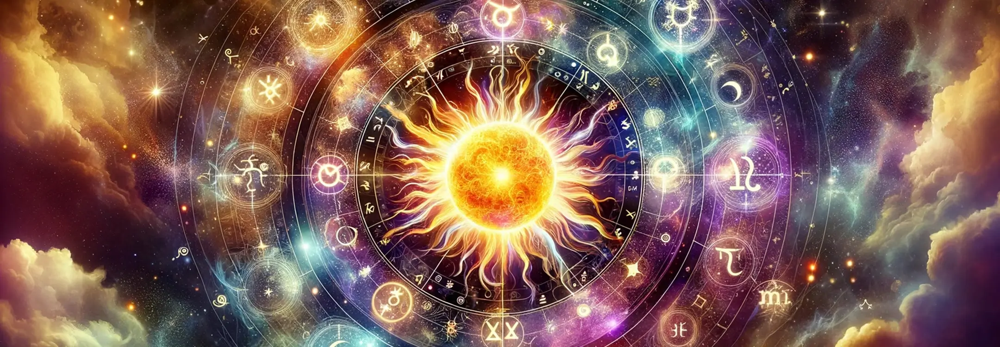

In astrology, the Sun stands as the cornerstone of your astrological chart, illuminating the core essence of your identity and the vital energy that fuels your life's journey. It represents your spirit, your vital force, and the conscious ego that manifests as your willpower and the sense of self. The Sun's placement in your birth chart by sign, house, and aspect paints a vivid picture of your innate characteristics, your strengths, and the areas where you shine brightest. It is the luminary that influences your personal style of expressing creativity, leadership, and the unique traits that set you apart from others. Understanding the Sun in astrology is akin to uncovering the blueprint of your fundamental nature, providing insights into the qualities you are meant to embody and project into the world. This celestial body's influence extends beyond mere personality traits, touching on your life's purpose, the paths you are drawn to, and the potential for your personal growth and fulfillment.
The Sun Sign, often referred to as your zodiac sign, is a pivotal factor in shaping your core personality and guiding you toward your destiny. It encapsulates the dominant traits, motivations, and the inherent essence that you carry through life, acting as a compass pointing towards your greatest potential and purpose. Your Sun Sign reflects the way you engage with the world, your approach to challenges, and the manner in which you express your individuality. It plays a critical role in determining your aspirations, ambitions, and the driving force behind your actions and decisions. As the embodiment of your conscious mind and ego, the Sun Sign serves as a lens through which you view life, influencing your values, preferences, and the way you interact with those around you. Embracing and understanding the qualities of your Sun Sign can empower you to live more authentically, aligning your outer actions with your inner truth, and steering you towards a fulfilling destiny that resonates with the core of your being.

Aries, the first sign of the zodiac, embodies a dynamic and pioneering spirit, characterized by an innate courage and a natural inclination towards taking initiative. This fire sign thrives on challenges and is always ready to embark on new ventures with enthusiasm and confidence. For those born under the sign of Aries, life is a series of adventures and opportunities to demonstrate their bravery and leadership. Their energetic and assertive nature often propels them to the forefront, making them trailblazers in their respective fields. Aries individuals possess a straightforward approach to life, preferring to tackle obstacles head-on rather than circumventing them, driven by an inner fire that fuels their desire for personal achievement and recognition.
The life purpose of an Aries revolves around asserting their individuality and making a mark on the world through leadership and the initiation of new projects. Aries individuals are at their best when they can channel their boundless energy into pioneering endeavors, leading others with their innate charisma and determination. Their personal power lies in their ability to inspire and motivate, often acting as catalysts for change and progress. For Aries, life is about forging paths where none exist, embracing the role of the innovator with zeal. If you are an Aries, embracing your leadership qualities and your capacity to spearhead new beginnings can lead to fulfilling your life's purpose, allowing you to make impactful contributions that reflect your dynamic and courageous spirit.
In interactions, Aries individuals are known for their passion and directness, often bringing an infectious energy that invigorates those around them. They communicate with a frankness and honesty that is both refreshing and, at times, startling, preferring straightforwardness over subtleties in all forms of communication. This direct approach stems from their desire for clarity and efficiency in interactions, valuing authenticity and action over prolonged deliberation. Aries' passion is evident in their enthusiastic engagement with life, which can inspire and motivate their peers. However, their forthrightness requires a balance to ensure that their assertiveness is perceived as leadership rather than dominance, fostering positive and productive relationships.

Taurus, represented by the steadfast bull, exudes a grounded nature characterized by a deep appreciation for stability and the sensual pleasures of life. This Earth sign finds comfort and joy in the tactile and material world, from the richness of a well-prepared meal to the softness of luxurious fabrics. If you are a Taurus, you likely value consistency and reliability, both in your environment and in your routines, seeking to build a life that is both secure and filled with simple pleasures. Taureans possess a remarkable ability to remain composed, especially in stressful situations, drawing on their inherent connection to the Earth to maintain balance and perspective. This grounding energy not only provides a sense of tranquility but also lends a patient and practical approach to achieving their goals.
The life purpose of Taurus revolves around building and appreciating value, whether it's in the form of material wealth, meaningful relationships, or artistic contributions. Taureans are endowed with an innate persistence, enabling them to see projects through to completion and to overcome obstacles with a steadfast determination. If you are a Taurus, your personal power lies in your ability to remain committed to your goals, coupled with a keen eye for beauty and quality. This Earth sign thrives when it can apply its strength and patience to create something lasting and valuable, finding fulfillment in the tangible results of their efforts. Taureans are called to cultivate and share their appreciation for the finer things in life, enriching their own lives and those of others through their dedication to creating enduring beauty and comfort.
In relationships, Taurus is synonymous with loyalty and patience, offering a stable and dependable presence to loved ones. Taureans approach their personal connections with the same dedication and steadfastness that they apply to other areas of their lives, valuing long-term commitments and the gradual deepening of bonds. If you are a Taurus, you likely cherish security and consistency in your relationships, preferring to build trust over time through reliable actions and a calm, comforting demeanor. This Earth sign's patient nature allows it to work through challenges and misunderstandings with a level head, making Taureans valued partners and friends who are willing to invest the time and effort required to nurture lasting connections.

Gemini, symbolized by the celestial twins, embodies a versatile and dynamic personality driven by an insatiable curiosity and a remarkable ability to adapt to changing circumstances. This Air sign thrives on variety, intellectual stimulation, and social interaction, constantly seeking new information and experiences to satisfy its lively mind. If you are a Gemini, you likely possess a quick wit and a broad range of interests, allowing you to engage with a diverse array of people and ideas. Geminis are adept at juggling multiple tasks and perspectives, using their mental agility to navigate complex situations with ease and grace. This adaptability not only makes life an exciting adventure for Geminis but also equips them with the skills to thrive in environments that require quick thinking and flexibility.
The life purpose of Gemini centers around forging connections and engaging in intellectual exploration, utilizing their communicative prowess to bridge gaps and exchange ideas. Geminis possess a unique personal power in their ability to articulate thoughts and concepts, making them natural communicators and mediators. If you are a Gemini, you may find fulfillment in roles that allow you to utilize your verbal and written skills, whether in teaching, writing, or any field that involves disseminating information. Your innate curiosity drives you to learn and share knowledge, often acting as a catalyst for discussions and new understandings. By embracing this role, Geminis can influence their surroundings positively, fostering a culture of learning and open-mindedness.
In social interactions, Gemini's wit and charm shine brightly, making them delightful and engaging companions. Their ability to converse on a wide range of topics with enthusiasm and intelligence endears them to others, often positioning them as the life of the party or the linchpin of social gatherings. If you are a Gemini, your social prowess likely stems from your genuine interest in people and your enjoyment of the interplay of ideas. This Air sign's communicative nature not only facilitates enjoyable exchanges but also allows Geminis to form connections easily, weaving a wide and varied social network that reflects their eclectic interests and open-minded approach to life.

Cancer, represented by the protective crab, is known for its profound emotional depth, marked by a strong sense of empathy and a highly developed intuition. This Water sign experiences emotions deeply, allowing them to connect with others on a heartfelt level and to sense the underlying emotional currents in any situation. If you are a Cancer, you likely possess a compassionate nature and an instinctive understanding of human emotions, making you a sensitive and supportive friend, partner, or family member. Cancers cherish emotional security and close connections, often creating a nurturing environment for those they care about, where feelings are respected and shared openly.
Cancer's life purpose is intricately tied to the themes of emotional security and caregiving, with a natural inclination towards creating safe and nurturing spaces for themselves and their loved ones. This Water sign's personal power lies in its ability to connect on an emotional level, offering empathy and support that can heal and comfort. If you are a Cancer, your role may involve using your intuitive understanding of emotions to guide, protect, and care for others, whether in your personal life or professional endeavors. By fostering emotional connections and ensuring the well-being of those around you, you fulfill your purpose and utilize your strengths, contributing to a more compassionate and understanding world.
In personal bonds, Cancer's sensitivity and protectiveness come to the forefront, highlighting their deep commitment to the welfare of their loved ones. This Water sign forms emotional connections that are intense and enduring, often going to great lengths to ensure the safety and happiness of family and friends. If you are a Cancer, your protective instincts likely manifest as a strong desire to shield those you care about from harm, sometimes even at the expense of your own needs. This selfless approach, combined with your empathetic nature, makes you a cherished companion who provides a safe haven for those in need of comfort and understanding.

Leo's radiant nature is characterized by an abundance of creativity and generosity, shining brightly like the Sun that rules this fiery sign. Leos are known for their dramatic flair, vibrant personalities, and a strong desire to express themselves in unique and impactful ways. Their creative endeavors are often grand and attention-grabbing, reflecting their innate need to share their inner light with the world. If you are a Leo, you likely find joy in generosity, delighting in the happiness your gifts, whether material or emotional, bring to others. This magnanimous spirit, combined with your creative talents, enables you to touch the lives of many, leaving a lasting impression with your warmth and benevolence.
The life purpose of Leo revolves around mastering the art of self-expression and using their charismatic presence to inspire and uplift those around them. Leos possess an innate personal power that stems from their ability to captivate and motivate others, often taking on leadership roles naturally. If you are a Leo, your journey involves embracing your authentic self and finding platforms that allow you to share your vision and creativity. Your ability to infuse passion and joy into your endeavors not only fulfills your need for recognition but also serves as a beacon of inspiration for others to follow their own hearts and dreams.
In social settings, Leo's warmth and magnanimity are unmistakable, often positioning them as the life of the party or the central figure in group dynamics. Their natural charisma and sunny disposition attract a diverse array of companions, drawn to the genuine kindness and generosity that Leos extend so freely. If you are a Leo, you thrive in social environments where you can showcase your social prowess and ability to make others feel valued and entertained. Your willingness to share your light and energy generously makes you a cherished friend and a magnetic personality, capable of bringing people together in celebration and camaraderie.

Virgo's meticulous character is a blend of precision and practicality, reflecting the analytical and detail-oriented nature of this Earth sign. Governed by Mercury, Virgos possess a keen mind that thrives on order, efficiency, and utility, applying their critical thinking skills to solve problems and improve systems. If you are a Virgo, you likely find satisfaction in the process of refinement and organization, whether it's in your personal space, at work, or in helping others. Your practical approach to life ensures that your efforts are not only thoughtful but also result in tangible improvements, making your contributions invaluable in any endeavor.
Virgo's life purpose is deeply rooted in the principles of improvement and service, driven by a desire to make the world a more functional and harmonious place. Virgos wield their personal power through meticulous attention to detail and a relentless pursuit of perfection, often in service to others. If you are a Virgo, your inherent need to analyze and refine can be channeled into meaningful work that benefits those around you, whether through health, organization, or any field that allows for the application of your practical skills. Your ability to discern what is needed and to provide it with precision and care is a true testament to your sign's dedication to service and improvement.
In interactions, Virgo's modesty and helpfulness shine through, often preferring to stay in the background while ensuring everything runs smoothly. Their approach to relationships is characterized by a willingness to assist and a preference for substance over showiness. If you are a Virgo, you likely express your care and affection through acts of service, paying attention to the small details that make a significant difference in the lives of your loved ones. Your practical advice and hands-on assistance are often sought after, as friends and family appreciate the reliability and thoughtfulness you bring to every interaction.

Libra's balanced approach to life is centered around harmony and fairness, embodying the diplomatic and equitable nature of this Air sign. Ruled by Venus, Libras possess an innate understanding of relationships and a strong desire to maintain equilibrium in all aspects of their lives. If you are a Libra, you likely excel in situations that require negotiation and compromise, using your charm and tact to smooth over conflicts and bring people together. Your natural inclination towards justice and fairness makes you a trusted mediator, as you strive to create peaceful and aesthetically pleasing environments that reflect your love for balance and beauty.
Libra's life purpose is intertwined with the art of peace-making and a deep appreciation for aesthetics, seeking to beautify the world and harmonize relationships. Librans harness their personal power through their ability to connect with others, fostering cooperation and mutual understanding. If you are a Libra, your diplomatic skills and eye for beauty guide you towards roles that allow you to restore balance and enhance the environment, whether through design, art, or conflict resolution. Your life's work involves using your gifts to bridge divides and create more harmonious and pleasing surroundings, contributing to a more balanced and beautiful world.
In relationships, Libra's diplomacy and grace are ever-present, contributing to their reputation as considerate and fair-minded partners and friends. Librans approach their personal connections with a focus on equality and mutual respect, always willing to listen and accommodate different viewpoints. If you are a Libra, you likely value harmony in your relationships above all, employing your natural charm and tact to navigate disagreements and ensure a peaceful coexistence. Your ability to maintain grace under pressure and to prioritize the well-being of your relationships makes you a valued companion, capable of fostering lasting bonds built on the foundations of respect and understanding.

Scorpio is characterized by an intense presence, marked by a profound depth and a constant undercurrent of transformation. This Water sign delves into the deepest parts of existence, exploring the mysteries of life and the complexities of the human psyche. If you are a Scorpio, you possess a powerful and magnetic aura, drawing others into your enigmatic world. Your approach to life is all or nothing, fully immersing yourself in your experiences and relationships to seek the truth that lies beneath the surface. This intensity fuels your transformative nature, allowing you to navigate through life's changes with resilience and a deep understanding of the cycles of death and rebirth.
The life purpose of Scorpio is intricately linked with themes of healing and regeneration, using their profound emotional depth and resilience to facilitate profound transformations. Scorpios possess a unique personal power that lies in their ability to confront and transcend life's darker aspects, emerging stronger and more insightful. If you are a Scorpio, your journey involves embracing your innate ability to heal, whether it's through helping others navigate their own shadows or undergoing your own process of renewal. Your capacity to delve into the depths and emerge reborn grants you a remarkable strength and wisdom, making you a beacon of regeneration for those around you.
In emotional connections, Scorpio's passion and desire for privacy dominate, leading to intensely loyal yet complex relationships. Scorpios seek depth and authenticity in their bonds, valuing emotional honesty and shared secrets. If you are a Scorpio, you likely approach your close relationships with a seriousness that reflects your commitment to truly understanding and merging with your partner. This depth can make you a profoundly transformative presence in the lives of those you love, although your need for privacy and control may sometimes pose challenges. Navigating these dynamics requires a delicate balance between intimacy and autonomy, allowing you to build trust and foster connections that withstand the test of time.

Sagittarius is known for its adventurous spirit, driven by a love for freedom and a quest for philosophical understanding. This Fire sign embodies the joy of exploration, whether it's through physical travel, intellectual pursuits, or spiritual seeking. If you are a Sagittarius, your optimistic and open-minded nature compels you to constantly expand your horizons, seeking new experiences that challenge your perceptions and beliefs. Your enthusiasm for life is infectious, inspiring those around you to explore the vastness of the world and the diversity of ideas that it holds.
The life purpose of Sagittarius centers around exploration and truth-seeking, aiming to understand the broader context of life and to share that wisdom with others. Sagittarians wield their personal power through their insatiable curiosity and their ability to see the bigger picture, making them natural teachers and philosophers. If you are a Sagittarius, you find fulfillment in your quest for knowledge and adventure, using your discoveries to illuminate the path for others. Your life's work is to inspire growth and expand the minds of those around you, encouraging a collective pursuit of truth and understanding.
In interactions, the enthusiasm and honesty of Sagittarius shine brightly, marking them as straightforward and dynamic companions. Sagittarians approach their social engagements with a frankness and openness that fosters genuine connections. If you are a Sagittarius, your candid nature and zest for life often make you the heart of social gatherings, where your stories and insights can captivate and enlighten. Your honesty, while refreshing, requires tact to ensure it uplifts rather than wounds, allowing you to maintain the positive impact you naturally have on those around you.

Capricorn's ambitious nature is built on a foundation of discipline and responsibility, driving this Earth sign to achieve and excel through hard work and perseverance. Capricorns possess a pragmatic approach to life, setting high standards for themselves and methodically pursuing their goals. If you are a Capricorn, your innate sense of duty and your ability to strategize and plan for the long term are key to your success. Your determination and resilience in the face of challenges exemplify the steadfast nature of your sign, making you a model of reliability and ambition.
The life purpose of Capricorn is deeply connected to achievement and mastery, seeking to make a lasting impact through their endeavors and to ascend to the heights of their potential. Capricorns derive their personal power from their unmatched discipline and their commitment to their goals, often serving as leaders and authorities in their fields. If you are a Capricorn, your journey involves the continuous pursuit of excellence and the establishment of a legacy that reflects your hard work and dedication. Your ability to navigate the path to success with patience and tenacity not only brings you personal fulfillment but also sets a standard of achievement for others to aspire to.
In both professional and personal dynamics, Capricorn's determination and prudence are evident, guiding their interactions with a blend of ambition and cautious foresight. Capricorns approach their relationships and responsibilities with a seriousness and integrity that earn them respect and trust. If you are a Capricorn, you likely value stability and security in your connections, preferring to build relationships on a foundation of mutual respect and shared goals. Your pragmatic approach to life's challenges, combined with your unwavering focus on your objectives, allows you to navigate complex dynamics with ease, making you a dependable and strategic partner in any endeavor.

Aquarius is known for its unique outlook, characterized by a blend of innovation and humanitarianism. This Air sign is driven by a desire to break the mold, using its visionary perspective to challenge the status quo and bring about progressive change. Aquarians are forward-thinking and often concerned with larger societal issues, seeking to implement solutions that benefit the collective. If you are an Aquarius, you likely possess a strong sense of individuality and a non-conformist attitude, allowing you to approach life's challenges with originality and creativity. Your humanitarian spirit, combined with your innovative ideas, positions you as a catalyst for positive change, inspiring others to think more broadly about community and the future.
The life purpose of Aquarius revolves around bringing visionary change and celebrating individuality. Aquarians are here to disrupt, innovate, and redefine what's possible, driven by their ideals and their unwavering belief in a better future. Their personal power lies in their ability to stay true to themselves while pushing the boundaries of conventional thinking. If you are an Aquarius, embracing your unique qualities and using them to advocate for change not only fulfills your purpose but also empowers those around you to embrace their own individuality. Your role is to lead by example, showing that true progress is made by daring to be different and by valuing the diversity and uniqueness of everyone.
In social engagements, Aquarius stands out for its originality and a certain level of detachment. Aquarians bring fresh perspectives and innovative ideas to the table, often sparking interesting and unconventional discussions. Their approach to relationships is somewhat paradoxical, combining a deep care for social and humanitarian issues with a personal detachment that allows them to maintain an objective viewpoint. If you are an Aquarius, you might find that this balance helps you in forming connections that are intellectually stimulating and devoid of unnecessary emotional complications, allowing for a free exchange of ideas and collaborative efforts towards common goals.

Pisces is characterized by an intuitive essence, deeply infused with compassion and a boundless imagination. This Water sign navigates the world through a profound emotional and psychic sensitivity, allowing them to connect with others on a deeply empathetic level. Pisceans are dreamers at heart, often finding refuge and expression in the arts, spirituality, and the unseen realms of life. If you are a Pisces, your intuitive nature likely guides you in understanding the world and the people around you, using your imagination not just as an escape but as a tool to create beauty and inspire compassion in the hearts of others.
The life purpose of Pisces centers around forging a deep spiritual connection and expressing their inner world through creativity. Pisceans have the unique ability to tap into the collective unconscious, drawing on their profound empathy and imaginative powers to bring forth artistic and spiritual insights. If you are a Pisces, your personal power emerges from your ability to transcend the mundane, using your creativity as a conduit for healing and inspiration. Your life's work involves navigating the delicate balance between the material and the mystical, bringing a touch of the divine into everyday existence through your artistic endeavors and compassionate actions.
In emotional relationships, Pisces is known for its deep empathy and a certain elusiveness. Pisceans have the capacity to feel the emotions of others as their own, often leading to profound bonds characterized by a deep understanding and compassion. However, this intense emotional receptivity can also make Pisceans somewhat elusive, as they may retreat into their inner worlds to protect their sensitive nature. If you are a Pisces, navigating your emotional relationships involves finding the balance between connecting deeply with others and maintaining the boundaries necessary to safeguard your own emotional well-being.

Integrating Sun Sign wisdom into your life is a powerful tool for empowerment and self-realization. Understanding the traits, strengths, and challenges associated with your Sun Sign can provide valuable insights into your personality, motivations, and life path. This knowledge enables you to align your actions with your true nature, making choices that resonate with your core being. By embracing the qualities of your Sun Sign, you can harness your innate potential, turning weaknesses into areas for growth and leveraging your strengths to achieve fulfillment and success in various aspects of your life.
The collective dance of the Zodiac offers a rich tapestry of energies and archetypes, each contributing to the complex mosaic of human experience. Understanding the diverse qualities of each Sun Sign not only fosters a deeper understanding of oneself but also promotes empathy and appreciation for the differences that make others unique. This astrological awareness encourages us to see beyond superficial distinctions, recognizing the common threads that bind us in our shared journey. By appreciating the full spectrum of zodiacal energies, we can navigate our relationships and the world around us with greater harmony, compassion, and insight, celebrating the diversity and unity that the Zodiac embodies.
Understand your birth chart, moon sign, moon phase and more
Sign up to recieve free daily readings, insights, horoscopes and more